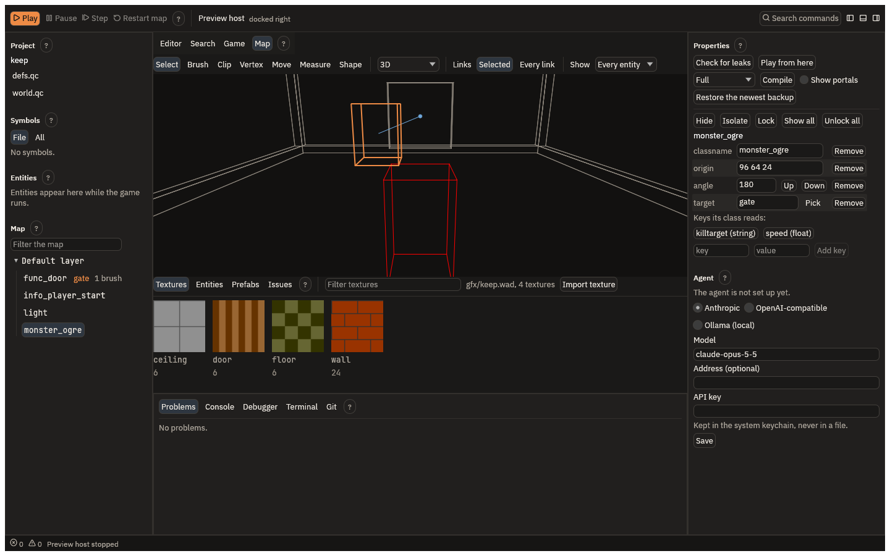
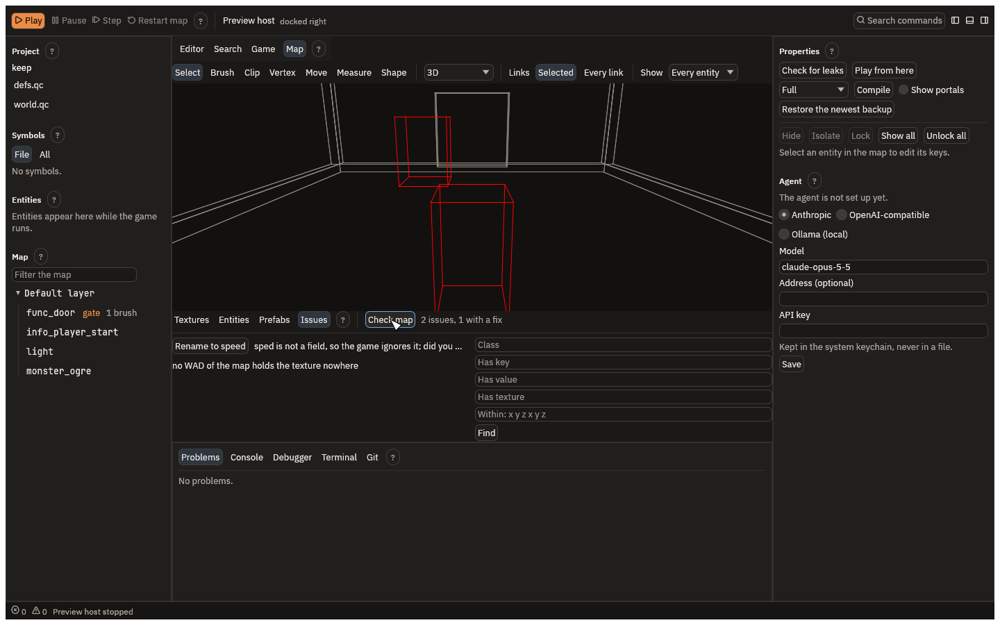

The map editor
This page takes you through building a map in QuakeC Studio: opening one, editing its entities and brushes, giving it textures, compiling it, finding a leak, and playing it from where you stand. Everything here works offline.
1. Set up once
You need a project open (see Getting started) and your own copy of Quake. The map editor reads the game where it is installed and never copies it.
- The game. Press Play once. If the IDE cannot find your game, it shows Choose your
Quake folder, says what the folder it looked at holds and lacks, and Choose folder picks
the folder that holds
id1. The IDE remembers it. Your Quake game data says which versions work. - The textures. A map names its WAD files in the world's
wadkey, as id's tools and ericw-tools read it. The texture browser lists the textures of every WAD the map names, found in the project, beside the map, or in the game folder. A texture no WAD holds is drawn with a stand-in and its name shown in red, with No WAD the map names holds this texture.
2. Open a map
In the Project panel, click a .map file. It opens in the Map tab in the centre: the 3D
view, the toolbar above it, and the Textures, Entities, Prefabs and Issues tabs below it. The
Map panel on the left lists the map's layers and entities; the Properties panel on the
right edits the selection. A .bsp with no .map opens too, to look at, but cannot be
compiled.

Moving around. Drag the 3D view to turn and scroll to move. With the view focused, W, A, S and D fly forward, left, back and right, and Q and X fly up and down, as in TrenchBroom. The layout picker beside Select shows the 3D view alone, 3D + top, or 4 views: 3D, top, front and side.

3. Edit entities
Click an entity in the view, or its row in the Map panel, to select it. Properties shows its keys:
- Edit a value in place, and Remove takes a key away.
- Where a value comes from a known set, the field offers it as you type:
classnamelists your mod's classes, andtarget,killtargetand the other keys your code fires entities by list the map's targetnames, each with what has it (gate func_door). A name no entity has yet is marked. Use the arrow keys and Enter, or click, to take one. - New key offers the keys the entity's class reads, as you type, each with its type, default
and what the class's
/*QUAKED*/comment says of it; taking one fills in its default. Any other key, such as a compiler's_minlight, is typed and added with Add key. - Spawn flags are checkboxes named by your code, followed by Quake's own: Not in easy, Not in normal, Not in hard or nightmare and Not in deathmatch.
- For a target key, Pick lets you click the entity it should fire, or Alt-drag from the selection onto it. Links in the toolbar draws the lines between entities that target each other, for the selection or for every entity.
To place a new entity, open the Entities tab below the view and drag a class into the map. The classes are your mod's, read from its QuakeC.
With an entity selected in the 3D view, the arrow keys and Page Up and Page Down move it by the grid, Alt+Left or Alt+Right turns it, Delete deletes it, and Cmd+D duplicates it. Cmd+S saves the map. Keys lists the rest.
Hide, Isolate, Lock, Show all and Unlock all in Properties act on the selection, and Show in the toolbar filters the entities by skill, coop and deathmatch.
Fire, on an entity's context menu and beside its classname in Properties, fires it as the
game would, with your mod's QuakeC, and shows in the Logic tab below the view what the code
did, step by step: each use, touch and think it reached, each entity found by its
targetname, removed or spawned, each message and sound, and the fields it wrote. Time is
simulated, so a delay of two seconds shows as two seconds. Click a step to select its entity;
the scrubber steps through the trace while the view lights the links fired so far. Nothing
changes, neither the map nor a game playing it. Check logic, in the same tab, fires every
entity that has targets and lists what only running shows: a target with no use, a chain
that removes an entity and then fires it, a chain that loops or stops the game with an error,
and an entity whose targets can never fire, such as a trigger_counter whose count is
more than the entities that fire it. These join the Issues tab.
Count, in the Balance tab, spawns the map with your mod's QuakeC on each skill, in single player, coop or deathmatch, and shows a column for each skill: the monsters by class with the health their code gives them, the weapons, the ammunition with the damage it does with id's weapons, the health and armour, the secrets, and the damage over the monsters' health. It counts the whole map, the selection, or one layer or group. Click a row to select its entities, or a skill's heading to show the map as that skill spawns it. A mod's own monsters and pickups count as its code makes them.
4. Build with brushes
The toolbar's tools make and change brushes:
- Brush: drag on the ground to draw a box.
- Shape: drag a box to fill it with a shape: a cylinder, cone, arch, UV sphere, icosphere, rock, scalable curve, stairs or spiral stairs, solid or hollow.
- Clip: select a brush, then drag the cut line; keep the part on either side.
- Vertex: move a brush's corners, split its faces and edges, extrude or chamfer.
- Move: select brushes, then drag to move them.
- Measure: drag from one point to another to read the distance.

With brushes selected, Brushes in Properties offers Subtract, Merge, Intersect, Delete brush, scaling and shearing.
Textures. Click a texture in the Textures tab to choose it; with brushes selected, Apply and the texture's name in Properties paints them with it. Alt-click faces in the view to select them alone; then drag the view to shift their texture, Shift-drag to rotate it and Cmd-drag to scale it. Fit, the justify buttons, Flip S and Flip T, Reset, Copy alignment and Paste alignment act on the selected faces. Texture lock keeps textures in place as brushes move.

To bring in a texture of your own, drop a PNG on the window while the Textures tab shows, or
press Import texture. The IDE maps its colours to Quake's palette, with Nearest colour or
Dither, writes it into the project's own WAD in textures/, and names that WAD in the map's
world.

Prefabs. Select brushes and entities and Save as prefab to keep them in the project's
prefabs folder; drag a prefab from the Prefabs tab into the view to copy it in.
5. Compile
The compile controls are at the top of Properties:
- Compile builds the map with the profile chosen beside it. Full runs the BSP, full vis
and full light; Fast runs fast vis and fast light. A project can add its own profiles in
compile-profiles.toml. - Check for leaks compiles the map in memory and says whether it leaks.
- Show portals draws where the map's leaves meet, from the last compile.
The compilers are QuakeC Studio's own, built into the app and checked against id's tools and
ericw-tools. Coloured lights, with a _color key, write a .lit beside the BSP.
After a compile, Engine limits in Properties shows how much of your project's target engine's limits the map uses: a meter for each, worst first, red when past and amber when within 10%, the rest folded under The other limits. They cover each part of the BSP, the largest face, and the edicts, models, sounds and light styles the map spawns with your QuakeC on each skill. Each engine's limits are read from its own source; the 2021 rerelease's are not known, since its source is not public. A limit past or near joins the Issues tab, and so does a map that had to be written as BSP2 when the target cannot load it.
6. Find a leak
A map leaks when an entity can reach the void through a gap in the world's brushes. Check for leaks says which entity the void reaches, draws the trail from it to the outside in the view, and Fly along the leak takes the camera along the trail to the gap. It also lists the textures the map's WADs lack.

When the map is sealed, it says The map is sealed: no entity is in reach of the void.
Check for leaks, and every compile, also checks that the map can be finished. It follows a
player from the start: walking up steps, falling, swimming, jumping onto a ledge up to 43 units
high and across a gap up to 240 wide, riding lifts, trains and teleporters, and opening doors with
keys, buttons, triggers and monsters killed, as the game's code does. Properties then says
whether A player can reach the exit from the start, how many places a player can come to
and not leave, and how many keys, weapons, items or secrets are never reached. Each such place is
drawn in the view as a red box, and its line in the Issues tab takes the camera to it. Something
the check cannot follow, such as a trigger_push or a mod's own entity, is counted too, since
it may make the answer wrong.
The Issues tab's Check map lists the map's other problems, checked against your mod's
QuakeC: a key no field of its class reads, such as a misspelled speed, and a missing texture.

7. Play from here
Play from here compiles the map fast, with no vis and fast light, starts the game on it, and puts you where the 3D view's camera is, facing its way. If the camera is in a wall or in the air, the player is moved up or down to the nearest place they fit. Walk around, then come back to the editor, change something and press it again.
8. If something goes wrong
The editor keeps a backup of the open map every minute while it has unsaved edits, and one each
time you save, in an autosave folder beside the map; the last 20 are kept. Restore the
newest backup puts the latest one in the editor as an edit, which Cmd+Z takes back.
If the file changes on disk while you have edits, the editor asks: Reload from disk, Keep mine, or Compare to see the difference.
A random map
File > New Random Map, or the New Random Map button in the Map tab when no map is
open, makes a playable level and opens it: rooms of several shapes and scales on several
floors, joined by passages, stairs, lifts and doors, from a start to an exit, with lights,
monsters, weapons, ammunition and health. It is written to the project as
maps/random<seed>.map, sealed, and compiles with no leak. Each level is checked as above
before it is opened, and one a player could get stuck in is never made. Press Play from here to walk it, or change it as any other map.

- The path loops back on itself: it climbs a floor and comes out on the balcony of a room you have already crossed, and you drop from it back to the floor. Rooms are joined into loops.
- Locks stand along the way, each opened from a room before it: the silver and gold keys, a button that opens a door elsewhere, and an arena whose door opens when its monsters are dead. A secret room holds a megahealth, a teleporter in the room before the exit leads back to the start, and monsters lie in ambush just past a lock.
- Each level takes a form: a hub, a great room with the rooms of its keys and buttons off it; a lake, a courtyard around water; or a canyon, three courtyards open to the sky.
- No level holds a trap. Every level is checked so that the exit can still be reached from every place the player can get to; a pool's edge is low enough to climb out over, and lava is railed off.
- The textures are those of the game's own levels, so the level needs no WAD of its own; it needs the game to be found.
- Only classes your mod's QuakeC defines are placed, and monsters get harder the further they are from the start.
- One seed always makes the same level.
map.generatetakes a seed and a size, and the agent and MCP can run it too. - A map with unsaved edits is not replaced: save it first.
Rooms and passages
map.build_room builds one room into the open map with one command, in a shape from id's
levels: a pillared hall, an eight-sided domed chamber, a hall around a pit crossed by bridges,
a room on two levels, a courtyard, a cross of two aisles, a vaulted room, an atrium with a
balcony, a junction where a corridor turns, or a courtyard around a lake. The room is sealed
but for the doorways you ask for, and has its lights and torches. Its parts dress it:
bays, braziers, a cornice, a skirting, columns, beams, lamp fixtures and door frames, each
where the shape takes it. map.build_passage joins
two doorways that face each other, with stairs where their floors differ and a door if you ask
for one. Each is one undo step.
Run them from the command line (Cmd+;), which asks for each value, or ask the agent for a room: these are the commands it builds maps with.
Models
A monster's, weapon's or item's look is its .mdl model. The model.* commands change
one, each change one undo step:
model.copy_from_gamemakes the project its own copy of one of the game's models, andmodel.inspectlists its skins, frames and size.model.export_skinandmodel.set_skintake a skin out as a PNG and put a painted one back, through Quake's palette;model.recolorchanges its colours by the palette's rows.model.scaleandmodel.moveresize and shift it;model.rename_frames,model.remove_framesandmodel.add_frameschange its animation.model.importmakes a.mdlfrom a mesh made in another program: an.obj,.iqe,.md5mesh,.smdor.fbx, with a PNG for its skin or a single colour. It answers the$frameline your QuakeC needs.
Play puts the project's own models, sounds and other assets where the game reads them, so a changed model shows the next time you play.
Next
- The play loop: change your mod's QuakeC while the map runs.
- Debugging: stop the running game at a line of your code.
- Commands: every
map.*command, which the agent, MCP and the CLI share.